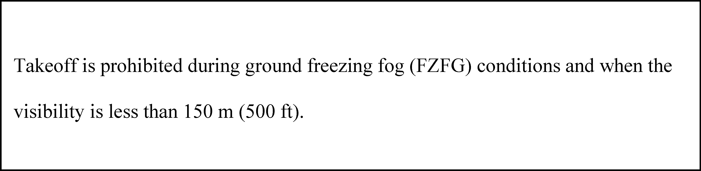
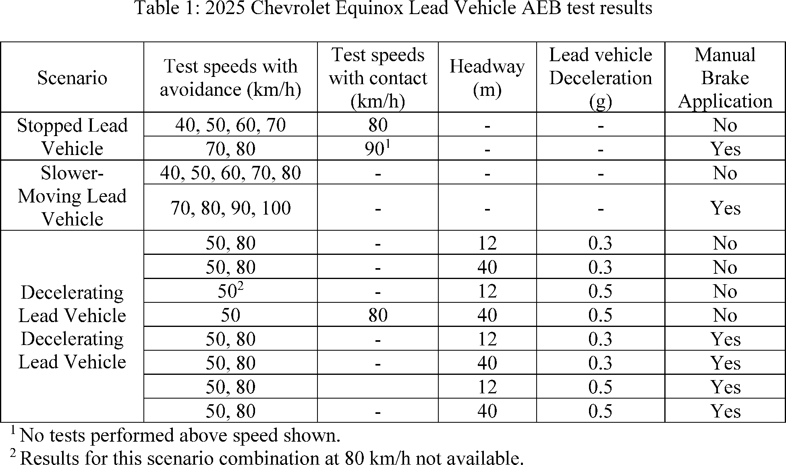
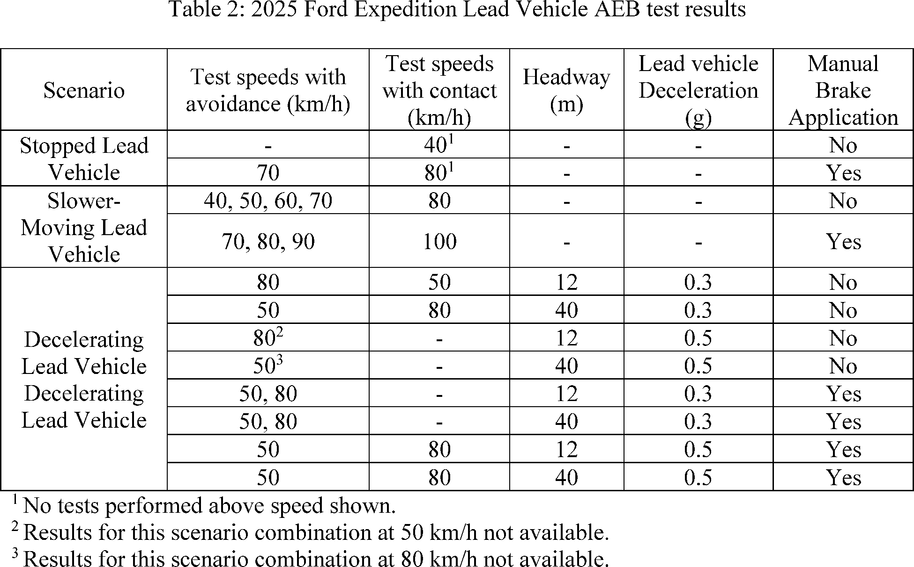

Daily Digest — 2026-11-27
Full observed listing for this day — the items our collectors observed for this publication day, mechanical rules applied, frozen at end of day; releases their publishers date on other days are counted there, not listed. This digest is the canonical record.
All items below cite the govinfo package (and granule, where applicable) they summarize. Selection is mechanical; each item states the rule that included it. See the Coverage Statement at the end for a full accounting of what was published, what was summarized, and what was excluded and why.
Day in Review
The digest carries eight bills introduced in the House and no congressional floor items or recorded votes.
On the executive side, the digest carries one presidential document: a memorandum dated November 23, 2026, directing the Attorney General to pursue federal jurisdiction and seek the death penalty, when appropriate and consistent with applicable law, for specified federal capital crimes beyond those identified in Executive Order 14164. Among the 17 proposed rules, EPA proposes approving air plans for Texas, Utah, Maryland and Virginia, a hazardous-waste exclusion for discarded leather protective equipment, and RCRA permitting technical updates. NHTSA proposes a two-year delay of the automatic emergency braking compliance date, the Fish and Wildlife Service proposes listing the ciliate-leaf tickseed as threatened, and the Postal Service proposes eliminating exceptional addressing for several mail classes. The Forest Service, USDA and CBP reopened or extended comment periods. The 10 final rules include three Copyright Royalty Judges cost-of-living adjustments, among them a 3.9% satellite carrier increase, a Bering Sea Pacific cod closure, and two Coast Guard temporary zones. The digest also carries 109 notices and 61 agency press releases.
The digest carries one national court opinion and 10 district court opinions. In Selby v. United States, the Court of International Trade denied a pro se plaintiff's motion to proceed in forma pauperis and for court-ordered service. The court stated that his disclosed income exceeded the federal poverty guideline for his household size.
Composed from the summarized items below and the day's mechanical counts; all specifics are cited in their sections.
1. Congressional Floor Activity
No Congressional Record issue was observed on this day. The Record for a day's proceedings is typically published by govinfo the following morning; it appears in the digest for the day it is observed (how our clocks work).
1.1 Senate
No Senate floor items met the selection thresholds. 0 floor granule(s) are accounted for in the Coverage Statement.
1.2 House of Representatives
No House floor items met the selection thresholds. 0 floor granule(s) are accounted for in the Coverage Statement.
1.3 Recorded Votes
No recorded votes were published in this issue of the Congressional Record.
2. Legislation
Source: Congressional Bills (BILLS), text versions published 2026-11-27 to 2026-11-27.
2.1 Counts by Stage
| Stage (bill text version) | Count |
|---|---|
| Introduced (ih/is) | 8 |
| Reported (rh/rs) | 0 |
| Engrossed (eh/es) | 0 |
| Enrolled (enr) | 0 |
| Other versions | 0 |
| Total bill texts published | 8 |
2.2 Bills Listed by Mechanical Rule
Bills below are listed because they matched at least one listing rule; the matching rule is stated per item. All other bill texts are counted above and accounted for in the Coverage Statement.
No bill texts published in this range matched a listing rule; all 8 are accounted for in the Coverage Statement.
3. Federal Register
10 final rules and corrections, led by a 3.9% cost-of-living adjustment to satellite carrier royalty rates; the rest cover Coast Guard water zones, Bering Sea cod fishing, and air and aviation actions.
Source: Federal Register (FR), issue of 2026-11-27.
3.1 Counts by Document Type
| Document type | Count |
|---|---|
| Rules | 10 |
| Proposed rules | 17 |
| Notices | 109 |
| Presidential documents | 1 |
| Total FR documents | 137 |
3.2 Rules Published
In plain terms 10 final rules and corrections, led by a 3.9% cost-of-living adjustment to satellite carrier royalty rates; the rest cover Coast Guard water zones, Bering Sea cod fishing, and air and aviation actions.
DEPARTMENT OF COMMERCE
- Fisheries of the Exclusive Economic Zone Off Alaska; Pacific Cod in the Bering Sea Subarea of the Bering Sea and Aleutian Islands Management Area (2026-24105; 50 CFR Part 679) — NMFS is prohibiting directed fishing for Pacific cod, except for the Community Development Quota program (CDQ), in the Bering Sea subarea of the Bering Sea and Aleutian Islands management area (BSAI). This action is necessary to prevent exceeding the non-CDQ allocation of the 2026 Pacific cod total allowable catch (TAC) in the Bering Sea subarea of the BSAI. Action: Temporary rule; closure. Dates: Effective 1200 hours, Alaska local time (A.l.t.), November 25, 2026, through 2400 hours, A.l.t., December 31, 2026.
- In plain terms NMFS prohibits directed fishing for Pacific cod outside the Community Development Quota program in the Bering Sea subarea, to prevent exceeding the non-CDQ share of the 2026 total allowable catch.
- Included because: FR-SEL-01 — document type: final rule (all listed)
- Source: FR-2026-11-27 / 2026-24105 (opens in a new tab)
DEPARTMENT OF HOMELAND SECURITY
- Security Zone; Ohio River, Cincinnati, OH (2026-24112; 33 CFR Part 165) — The Coast Guard is establishing a temporary security zone for all navigable waters of the Ohio River, extending the entire width of the river, between mile markers (MM) 461 to MM 473. This security zone is needed to provide waterside security and protection of persons under the protection of the United States Secret Service during a visit to Cincinnati, OH. During the enforcement period, entry into, transiting, or anchoring in the security zone is prohibited unless specifically authorized by the Captain of the Port (COTP), Ohio Valley or a designated on-scene U.S. Coast Guard representative. Action: Temporary final rule. Dates: This rule is effective without actual notice from November 27, 2026, through November 30, 2026. For purposes of enforcement, actual notice will be used from 12:01 a.m. on November 22, 2026, through November 27, 2026.
- In plain terms The Coast Guard is establishing a temporary security zone across the Ohio River between mile markers 461 and 473 near Cincinnati, Ohio, during a Secret Service-protected visit; entry, transit, or anchoring requires authorization.
- Included because: FR-SEL-01 — document type: final rule (all listed)
- Source: FR-2026-11-27 / 2026-24112 (opens in a new tab)
- Special Local Regulation; Savannah River, Savannah, GA (2026-24144; 33 CFR Part 100) — The Coast Guard is establishing a temporary special local regulation (SLR) for the navigable waters of the Savannah River from the Talmadge Bridge to Eastern Wharf. This action is necessary to provide for the safety of life on these navigable waters near Savannah, GA during the Savannah Lighted Boat Parade. This regulation prohibits persons and vessels from entering the regulated area unless specifically authorized by the Captain of the Port Savannah (COTP) or their designated representative. Action: Temporary final rule. Dates: This rule is effective from 6 p.m. to 10 p.m. on November 28, 2026.
- In plain terms During the Savannah Lighted Boat Parade, the Coast Guard is temporarily restricting the Savannah River from Talmadge Bridge to Eastern Wharf, so entry requires permission from the Captain of the Port Savannah or a designee.
- Included because: FR-SEL-01 — document type: final rule (all listed)
- Source: FR-2026-11-27 / 2026-24144 (opens in a new tab)
DEPARTMENT OF JUSTICE
- Implementation of HAVANA Act of 2021; Correction (2026-24141) — The Department of Justice is correcting a final rule that published in the Federal Register of October 27, 2026, implementing parts of the HAVANA Act of 2021. Due to an editorial error, two instructions were inadvertently combined. This document corrects that error. Action: Final rule; correction. Dates: Effective November 27, 2026.
- In plain terms The Department of Justice corrects a final rule published October 27, 2026, that implements parts of the HAVANA Act of 2021, because an editorial error combined two instructions.
- Included because: FR-SEL-01 — document type: final rule (all listed)
- Source: FR-2026-11-27 / 2026-24141 (opens in a new tab)
DEPARTMENT OF THE TREASURY
- Regulations Regarding Payment of Tax by Commercially Acceptable Means; Correction (2026-24135; 26 CFR Part 301) — This document includes corrections to Treasury Decision 10060 published in the Federal Register on Monday, October 19, 2026. Treasury Decision 10060 contains final regulations regarding the payment of tax by commercially acceptable means. Action: Final rule; correction and correcting amendment. Dates: Effective date: These corrections are effective on November 27, 2026. Applicability date: For date of applicability, see § 301.6311-2(g).
- In plain terms This document corrects Treasury Decision 10060, final rules on paying tax by commercially acceptable means, published in the Federal Register on October 19, 2026.
- Included because: FR-SEL-01 — document type: final rule (all listed)
- Source: FR-2026-11-27 / 2026-24135 (opens in a new tab)
DEPARTMENT OF TRANSPORTATION
- Airworthiness Directives; Airbus Canada Limited Partnership (Type Certificate Previously Held by C Series Aircraft Limited Partnership (CSALP); Bombardier, Inc.) Airplanes (2026-24137; 14 CFR Part 39) — The FAA is adopting a new airworthiness directive (AD) for all Airbus Canada Limited Partnership Model BD-500-1A10 and BD-500-1A11 airplanes. This AD was prompted by a report of engine stall events that occurred on ground in icing weather conditions (freezing fog) during engine acceleration to take-off thrust, or during the take-off phase. This AD requires revising the existing airplane flight manual (AFM) to provide the flightcrew with a prohibition to follow under certain freezing fog conditions. The FAA is issuing this AD to address the unsafe condition on these products. Action: Final rule; request for comments. Dates: This AD is effective December 14, 2026. The FAA must receive comments on this AD by January 11, 2027.
- In plain terms The FAA adopts an airworthiness directive for Airbus Canada BD-500-1A10 and BD-500-1A11 airplanes after on-ground engine stalls in freezing fog during takeoff, requiring flight manual revision with a flight-crew prohibition for certain freezing fog conditions.
- Included because: FR-SEL-01 — document type: final rule (all listed)
- Source: FR-2026-11-27 / 2026-24137 (opens in a new tab)

Source graphic 1 of 1 from 2026-24137.
ENVIRONMENTAL PROTECTION AGENCY
- Air Quality Plan; California; San Diego County Air Pollution Control District; Landfill Flares (2026-24092; 40 CFR Part 52) — The U.S. Environmental Protection Agency (EPA) is taking final action to conditionally approve a revision to the San Diego County Air Pollution Control District (SDCAPCD or “District”) portion of the California State implementation plan (SIP). This revision concerns emissions of oxides of nitrogen (NO X ) from landfill flares. We are conditionally approving a local rule to regulate these emission sources under the Clean Air Act (CAA or “Act”). Action: Final rule. Dates: This rule is effective December 28, 2026.
- In plain terms EPA gives final conditional approval to a San Diego County air district revision to California's state plan covering nitrogen oxide emissions from landfill flares, through a local rule.
- Included because: FR-SEL-01 — document type: final rule (all listed)
- Source: FR-2026-11-27 / 2026-24092 (opens in a new tab)
LIBRARY OF CONGRESS
- Cost of Living Adjustment to Public Broadcasters Compulsory License Royalty Rate (2026-24051; 37 CFR Part 381) — The Copyright Royalty Judges (“Judges”) announce a cost of living adjustment (“COLA”) to the royalty rate that noncommercial radio stations at certain colleges, universities, and other educational institutions that are not affiliated with National Public Radio must pay for the use in 2027 of published nondramatic musical compositions in the SESAC Performing Rights, LLC (“SESAC”), and Global Music Rights, LLC (“GMR”), repertories pursuant to the statutory license under the Copyright Act for noncommercial broadcasting. Action: Final rule; cost of living adjustment. Dates: Effective date: November 27, 2026. Applicability dates: These rates are applicable to the period January 1, 2027, through December 31, 2027.
- In plain terms Copyright Royalty Judges announce a cost-of-living adjustment for 2027 to the royalty rate that noncommercial educational radio stations not affiliated with NPR pay for using songs from SESAC and GMR under the statutory license.
- Included because: FR-SEL-01 — document type: final rule (all listed)
- Source: FR-2026-11-27 / 2026-24051 (opens in a new tab)
- Cost of Living Adjustment to Royalty Rates and Terms for Making and Distributing Phonorecords (2026-24124; 37 CFR Part 385) — The Copyright Royalty Judges (“Judges”) announce a cost of living adjustment (“COLA”) in the royalty rates for the statutory license for making and distributing phonorecords of nondramatic musical works regarding physical phonorecords and Permanent Downloads. Action: Final rule; cost of living adjustment. Dates: Effective date: November 27, 2026. Applicability date: These rates and terms are applicable during the period from January 1, 2027, through December 31, 2027.
- In plain terms Copyright Royalty Judges announce a cost-of-living adjustment to the royalty rates for the statutory license to make and distribute copies of nondramatic musical works, covering physical copies and Permanent Downloads.
- Included because: FR-SEL-01 — document type: final rule (all listed)
- Source: FR-2026-11-27 / 2026-24124 (opens in a new tab)
- Cost of Living Adjustment to Satellite Carrier Compulsory License Royalty Rates (2026-24125; 37 CFR Part 386) — The Copyright Royalty Judges (“Judges”) announce a cost of living adjustment (“COLA”) of 3.9% in the royalty rates satellite carriers pay for a compulsory license under the Copyright Act. The COLA is based on the change in the Consumer Price Index from October 2025 to September 2026. Action: Final rule; cost of living adjustment. Dates: Effective date: November 27, 2026. Applicability dates: These rates are applicable to the period January 1, 2027, through December 31, 2027.
- In plain terms Copyright Royalty Judges announce a 3.9% cost-of-living adjustment to royalty rates satellite carriers pay for a compulsory license under the Copyright Act, based on Consumer Price Index change from October 2025 to September 2026.
- Included because: FR-SEL-01 — document type: final rule (all listed)
- Source: FR-2026-11-27 / 2026-24125 (opens in a new tab)
3.3 Proposed Rules Published
In plain terms 17 proposed rules, led by an NHTSA proposal to delay automatic emergency braking compliance by two years; the rest cover EPA air plans, FAA airworthiness directives, and fishery and mineral items.
DEPARTMENT OF AGRICULTURE
- Locatable Minerals (2026-24129; 36 CFR Part 228) — The U.S. Department of Agriculture, Forest Service (Agency) is reopening the comment period for the proposed rule, “Locatable Minerals,” which published in the Federal Register on February 20, 2026 (91 FR 8316). The proposed rule would revise regulations governing occupancy and use of National Forest System lands in connection with prospecting, exploration, development, mining, processing, and reclamation conducted under the mining laws. The Agency is reopening the comment period to allow the public additional time to review the proposed revisions and submit comments. The proposed regulatory text and supporting analyses, including the draft environmental impact statement and cost-benefit analysis are unchanged by this notice. Action: Proposed rule; reopening of the comment period. Dates: The comment period for the proposed rule published on February 20, 2026 (91 FR 8316), is reopened. Written comments must be received on or before December 11, 2026.
- In plain terms The Forest Service reopens the comment period on its proposed Locatable Minerals rule, first published in the Federal Register on February 20, 2026, to give the public more time to comment; the proposal itself is unchanged.
- Included because: FR-SEL-02 — document type: proposed rule (all listed)
- Source: FR-2026-11-27 / 2026-24129 (opens in a new tab)
- Agricultural Foreign Investment Disclosure Act of 1978 (2026-24143; 7 CFR Part 2, 780, 781, and 5100) — On June 25, 2026, the United States Department of Agriculture (the Agency) published a proposed rule to update its regulations regarding the Agricultural Foreign Investment Disclosure Act of 1978 (AFIDA) (91 FR 38315) and requested public comment by August 10, 2026. The Agency is reopening the comment period in response to a request from stakeholders to extend the comment period to allow additional time for interested parties to review the proposed revisions and submit comments. Action: Proposed rule; reopening of the comment period. Dates: The comment period for the proposed rule published on June 25, 2026 (91 FR 38315), is reopened. Written comments must be received on or before December 11, 2026.
- In plain terms The USDA reopens the comment period for proposed updates to Agricultural Foreign Investment Disclosure Act of 1978 regulations, first published June 25, 2026, with comments originally due August 10, 2026, after stakeholders requested more time.
- Included because: FR-SEL-02 — document type: proposed rule (all listed)
- Source: FR-2026-11-27 / 2026-24143 (opens in a new tab)
DEPARTMENT OF COMMERCE
- Reef Fish Fishery of the Gulf of America; Amendment 63 (2026-24118; 50 CFR Part 622) — The Gulf Council (Council) has submitted Amendment 63 to the Fishery Management Plan for the Reef Fish Resources of the Gulf (FMP) (Amendment 63) for review, approval, and implementation by NMFS. If approved, Amendment 63 would, for red grouper in the Gulf of America (Gulf), establish a commercial quota pool under a 3-year pilot program within the Grouper-Tilefish Individual Fishing Quota (IFQ) program. The purpose of Amendment 63 is to test whether a new method of distributing a portion of the red grouper commercial quota improves access to red grouper commercial allocation within the IFQ program, reduces bycatch and discards of IFQ species, and enhances economic profitability for quota pool participants. Action: Announcement of availability of fishery management plan amendment; request for comments. Dates: Written comments on Amendment 63 must be received no later than January 26, 2027.
- In plain terms If approved, Amendment 63 would set up a three-year pilot program creating a red grouper commercial quota pool in the Gulf of America's Grouper-Tilefish fishing quota program, testing whether it improves access and reduces bycatch.
- Included because: FR-SEL-02 — document type: proposed rule (all listed)
- Source: FR-2026-11-27 / 2026-24118 (opens in a new tab)
DEPARTMENT OF HOMELAND SECURITY
- Heightened Import Disclosures for Supply Chain Visibility; Extension of Comment Period (2026-24149; 19 CFR Parts 141, 142, 143, and 163) — This document announces that U.S. Customs and Border Protection (CBP) will extend the comment period for an additional 45 days for interested parties to submit comments on the advance notice of proposed rulemaking (ANPRM) regarding supply chain visibility. The ANPRM was published in the Federal Register on September 2, 2026, with comments due on or before December 1, 2026. To allow for as much public participation as possible in the formulation of a Notice of Proposed Rulemaking, CBP is extending the comment period to January 15, 2027. Action: Advance notice of proposed rulemaking; extension of comment period. Dates: The comment period for the ANPRM published on September 2, 2026, at 91 FR 56408, is extended. Comments must be received on or before January 15, 2027.
- In plain terms U.S. Customs and Border Protection is extending by 45 days the public comment period on an early notice about supply chain visibility, moving the deadline from December 1, 2026 to January 15, 2027.
- Included because: FR-SEL-02 — document type: proposed rule (all listed)
- Source: FR-2026-11-27 / 2026-24149 (opens in a new tab)
DEPARTMENT OF THE INTERIOR
- Endangered and Threatened Wildlife and Plants; Threatened Species Status With Section 4(d) Rule for Ciliate-Leaf Tickseed (2026-24097; 50 CFR Part 17) — We, the U.S. Fish and Wildlife Service (Service), propose to list the ciliate-leaf tickseed ( Coreopsis integrifolia ), a plant species from Florida, Georgia, and South Carolina as a threatened species with protective regulations under section 4(d) of the Endangered Species Act of 1973, as amended (Act). This determination also serves as our 12-month finding on a petition to list the ciliate-leaf tickseed. After a review of the best scientific and commercial data available, we find that listing the species is warranted. If we finalize this rule as proposed, it would add this species to the List of Endangered and Threatened Plants and extend the Act's protections to the species. Action: Proposed rule. Dates: Comments will be accepted on or before January 26, 2027. Comments submitted electronically using the Federal eRulemaking Portal (see ADDRESSES , below) must be received by 11:59 p.m. eastern time on the closing date. We must receive requests for a public hearing, in writing, at the address shown in FOR FURTHER INFORMATION CONTACT by January 11, 2027. To ensure your comment is received and considered, you must submit it using one of the methods identified in the ADDRESSES section of this document. Comments submitted through any method not authorized in this document, or sent to an address not listed here, will not be considered.
- In plain terms The Fish and Wildlife Service proposes listing ciliate-leaf tickseed, a plant from Florida, Georgia, and South Carolina, as threatened under the Endangered Species Act, finding after review that listing is warranted.
- Included because: FR-SEL-02 — document type: proposed rule (all listed)
- Source: FR-2026-11-27 / 2026-24097 (opens in a new tab)
DEPARTMENT OF TRANSPORTATION
- Airworthiness Directives; General Electric Company Engines (2026-24099; 14 CFR Part 39) — The FAA proposes to adopt a new airworthiness directive (AD) for certain General Electric Company (GE) Model GE90-110B1 and GE90-115B engines. This proposed AD was prompted by a report of an aborted takeoff due to left engine failure caused by liberation of the interstage high-pressure turbine (HPT) rotor seal rim. This proposed AD would require determining the recalculated service life of the interstage HPT rotor seal and, depending on the results, replacing the interstage HPT rotor seal with a part eligible for installation. For certain engine populations, as an alternative to replacing the interstage HPT rotor seal, this proposed AD would require initial and repetitive ultrasonic inspections of the interstage HPT rotor seal for cracks and, depending on the results, removing the interstage HPT rotor seal from service. The FAA is proposing this AD to address the unsafe condition on these products. Action: Notice of proposed rulemaking (NPRM). Dates: The FAA must receive comments on this proposed AD by January 11, 2027.
- In plain terms The FAA proposes an airworthiness directive for certain General Electric GE90-110B1 and GE90-115B engines, requiring checks of the interstage high-pressure turbine rotor seal's service life and replacement or inspection as needed.
- Included because: FR-SEL-02 — document type: proposed rule (all listed)
- Source: FR-2026-11-27 / 2026-24099 (opens in a new tab)
- Airworthiness Directives; Bombardier, Inc., Airplanes (2026-24120; 14 CFR Part 39) — The FAA proposes to adopt a new airworthiness directive (AD) for certain Bombardier, Inc., Model BD-700-1A10 and BD-700-1A11 airplanes. This proposed AD was prompted by a report of an issue with the heads-up display application (HDA) software in avionics software version 5.8 that could result in the HDA being unable to read errors in the graphical engine chip (GE5) local and frame buffer memory during power-up. This proposed AD would require installing avionics software version 5.9 or later approved software version. The FAA is proposing this AD to address the unsafe condition on these products. Action: Notice of proposed rulemaking (NPRM). Dates: The FAA must receive comments on this proposed AD by January 11, 2027.
- In plain terms The FAA proposes an airworthiness directive for certain Bombardier BD-700-1A10 and BD-700-1A11 airplanes, requiring installation of avionics software version 5.9 or later approved version to address a heads-up display software issue.
- Included because: FR-SEL-02 — document type: proposed rule (all listed)
- Source: FR-2026-11-27 / 2026-24120 (opens in a new tab)
- Airworthiness Directives; Airbus SAS Airplanes (2026-24122; 14 CFR Part 39) — The FAA proposes to adopt a new airworthiness directive (AD) for certain Airbus SAS Model A330-202, A330-243, A330-243F, A330-302, A330-323, A330-343, A330-841, and A330-941 airplanes. This proposed AD was prompted by an investigation that revealed a potential discrepant gap between the National Advisory Committee for Aeronautics (NACA) vent intake panel and horizontal tail plane skin. This proposed AD would require modification of the NACA vent intake panel installation on the horizonal tail plane. This proposed AD would also prohibit the installation of affected parts. The FAA is proposing this AD to address the unsafe condition on these products. Action: Notice of proposed rulemaking (NPRM). Dates: The FAA must receive comments on this proposed AD by January 11, 2027.
- In plain terms The FAA proposes an airworthiness directive for Airbus A330 models, after an investigation found a possible gap between the NACA vent intake panel and the horizontal tail plane skin, requiring panel modification and banning affected-part installation.
- Included because: FR-SEL-02 — document type: proposed rule (all listed)
- Source: FR-2026-11-27 / 2026-24122 (opens in a new tab)
- Federal Motor Vehicle Safety Standards: Automatic Emergency Braking Systems for Light Vehicles (2026-24140; 49 CFR Part 571) — NHTSA proposes to modify Federal Motor Vehicle Safety Standard No. 127; Automatic emergency braking systems for light vehicles. NHTSA proposes to delay the compliance date by two years so that manufacturers have more time to comply with the standard. NHTSA also proposes test procedures for testing the malfunction telltale and to clarify the test speed tolerance. The agency seeks comment on other potential modifications to the standard. Action: Notice of proposed rulemaking (NPRM). Dates: Comments must be received on or before January 26, 2027. Proposed compliance date: Compliance would be required for all vehicles manufactured on or after September 1, 2031. Small-volume manufacturers, final-stage manufacturers, and alterers would be provided an additional year, with compliance required for all vehicles manufactured by such entities on or after September 1, 2032.
- In plain terms NHTSA proposes changing Federal Motor Vehicle Safety Standard No. 127 for automatic emergency braking on light vehicles by delaying the compliance date two years, adding malfunction telltale test procedures, and clarifying test speed tolerance.
- Included because: FR-SEL-02 — document type: proposed rule (all listed)
- Source: FR-2026-11-27 / 2026-24140 (opens in a new tab)

Source graphic 1 of 21 from 2026-24140.
Source graphic 2 of 21 from 2026-24140.- Graphics not rendered here: 19 of 21 — see the source PDF (opens in a new tab).
ENVIRONMENTAL PROTECTION AGENCY
- Air Plan Approval; Texas; Attainment Plan for the Navarro County 2010 Sulfur Dioxide Primary National Ambient Air Quality Standard Nonattainment Area (2026-24033; 40 CFR Part 52) — The Environmental Protection Agency (EPA) is proposing to approve the State Implementation Plan (SIP) revision that Texas submitted to the EPA on October 24, 2022, for the 2010 1-hour sulfur dioxide (SO 2 ) primary national ambient air quality standard (NAAQS) in the Navarro County SO 2 nonattainment area. This SIP (or “attainment plan”) includes Texas' attainment demonstration provisions and emissions inventory for the nonattainment area, demonstration of reasonable further progress (RFP), implementation of reasonably available control measures (RACM) (including reasonably available control technology (RACT)), an approved nonattainment new source review (NNSR) program, enforceable emissions limitations and control measures, and adequate contingency measures for the affected area. The EPA is proposing to approve Texas' attainment plan for Navarro County and accompanying provisions for the enforceable control strategy for the Navarro area. Action: Proposed rule. Dates: Comments must be received on or before December 28, 2026.
- In plain terms EPA proposes approving Texas's attainment plan, submitted October 24, 2022, for the 2010 one-hour sulfur dioxide standard in Navarro County, covering emissions data, progress demonstration, control measures, and contingency measures.
- Included because: FR-SEL-02 — document type: proposed rule (all listed)
- Source: FR-2026-11-27 / 2026-24033 (opens in a new tab)
- Air Plan Approval; Utah; Cache County Inspection and Maintenance Program Revision (2026-24036; 40 CFR Part 52) — The U.S. Environmental Protection Agency (EPA) is proposing to approve State Implementation Plan (SIP) revisions submitted by the State of Utah on February 28, 2025. The Utah submittal includes revisions to the State's Administrative Rule R307-110-36, concerning SIP Section X Vehicle Inspection and Maintenance (I/M) Program, Part F, Cache County. These revisions updated the rule effectiveness date, updated the definition of vehicle I/M program stations, added emergency vehicle exemptions, and added a part unavailability waiver to the Cache County, Utah I/M program. Action: Proposed rule. Dates: Written comments must be received on or before December 28, 2026.
- In plain terms EPA proposes approving Utah's February 28, 2025 submission revising Cache County's vehicle inspection and maintenance rule, updating the rule effectiveness date and station definitions and adding emergency vehicle exemptions and a part unavailability waiver.
- Included because: FR-SEL-02 — document type: proposed rule (all listed)
- Source: FR-2026-11-27 / 2026-24036 (opens in a new tab)
- Air Plan Approval; Maryland; Interstate Transport Requirements for the 2010 1-Hour Sulfur Dioxide National Ambient Air Quality Standard (2026-24042; 40 CFR Part 52) — The U.S. Environmental Protection Agency (EPA) is proposing to approve portions of a Maryland state implementation plan (SIP) submission as adequate to meet certain Clean Air Act (CAA) interstate transport requirements for the 2010 primary sulfur dioxide (SO 2 ) national ambient air quality standard (NAAQS). Specifically, the EPA proposes to find that the SIP submission demonstrates that the Maryland SIP contains adequate provisions prohibiting emissions from Maryland sources from contributing significantly to nonattainment or interfering with maintenance of the 2010 SO 2 NAAQS in any other state. This action is being taken under the CAA. Action: Proposed rule. Dates: Written comments must be received on or before December 28, 2026.
- In plain terms EPA proposes finding Maryland's plan adequate under Clean Air Act interstate transport requirements for the 2010 sulfur dioxide standard, since it bars Maryland sources from significantly contributing to nonattainment or interfering with maintenance elsewhere.
- Included because: FR-SEL-02 — document type: proposed rule (all listed)
- Source: FR-2026-11-27 / 2026-24042 (opens in a new tab)
- Air Plan Approval; Virginia; Revision to Minor New Source Review Permit Exemptions (2026-24043; 40 CFR Part 52) — The Environmental Protection Agency (EPA) is proposing to approve a state implementation plan (SIP) revision (Revision A25) submitted by the Commonwealth of Virginia. This revision pertains to an amendment made in the Virginia Administrative Code (VAC) to include minor New Source Review (NSR) permit exemptions for bovine incinerators for agricultural use. This action is being taken under the Clean Air Act (CAA). Action: Proposed rule. Dates: Written comments must be received on or before December 28, 2026.
- In plain terms EPA proposes approving Virginia's state plan revision (Revision A25) amending the Virginia Administrative Code to add minor new-source permit review exemptions for bovine incinerators for agricultural use under the Clean Air Act.
- Included because: FR-SEL-02 — document type: proposed rule (all listed)
- Source: FR-2026-11-27 / 2026-24043 (opens in a new tab)
- Reducing Complexity in Management of Leather Waste (2026-24080; 40 CFR Part 261) — EPA is proposing to revise the regulations defining solid wastes that are not hazardous wastes by adding a new exclusion. The proposed revision specifies that leather articles used as personal protective equipment are not hazardous wastes when discarded, if they meet the same standards applicable to the currently excluded waste scrap leather from various leather product manufacturing industries. Action: Proposed rule. Dates: Comments must be received on or before January 26, 2027.
- In plain terms EPA proposes a new exclusion declaring leather articles used as personal protective equipment not hazardous waste when discarded, if they meet the standards for the existing exemption covering scrap leather waste.
- Included because: FR-SEL-02 — document type: proposed rule (all listed)
- Source: FR-2026-11-27 / 2026-24080 (opens in a new tab)
- Significant New Use Rule on a Chemical Substance (P-24-195) (2026-24082; 40 CFR Part 721) — EPA is proposing a significant new use rule (SNUR) under the Toxic Substances Control Act (TSCA) for a chemical substance that was the subject of a premanufacture notice (PMN) and is also subject to an Order issued by EPA pursuant to TSCA. The SNUR requires persons to notify EPA at least 90 days before commencing the manufacture (defined by statute to include import) or processing of this chemical substance for an activity that is designated as a significant new use in the SNUR. The required notification initiates EPA's evaluation of the conditions of that use for that chemical substance. In addition, the manufacture or processing for the significant new use may not commence until EPA has conducted a review of the required notification; made an appropriate determination regarding that notification; and taken such actions as required by that determination. Action: Proposed rule. Dates: Comments must be received on or before December 28, 2026.
- In plain terms EPA proposes a Toxic Substances Control Act rule requiring 90 days' notice before manufacturing (including importing) or processing chemical P-24-195 for a designated new use, which may not start until EPA's review is complete.
- Included because: FR-SEL-02 — document type: proposed rule (all listed)
- Source: FR-2026-11-27 / 2026-24082 (opens in a new tab)
- Technical Updates to the RCRA Hazardous Waste Permitting Regulations—Permitting Technical Updates Rule (2026-24084; 40 CFR Parts 124, 260, 261, 262, 263, 264, 265, 266, 267, 268, 270, 271, 273, and 279) — The Environmental Protection Agency (EPA) is proposing technical updates to the regulations implementing the Resource Conservation and Recovery Act (RCRA) governing hazardous waste treatment, storage, and disposal facilities (TSDFs), as well as associated permitting requirements. The proposal also includes a few conforming technical updates to the generator and transporter regulations. The RCRA hazardous waste TSDF permitting regulations have remained largely unchanged for over three decades, despite evolving standards and practices. Collectively, these revisions are intended to address inadvertent errors, remove obsolete references, reflect current information and standards, and implement targeted updates to the RCRA permitting regulations to improve clarity, consistency, and efficiency in the hazardous waste TSDF permitting program. Through a separate Federal Register document, EPA will be seeking input on areas in the RCRA permitting program and permitting regulations to consider for permitting policy or regulatory reform. [official summary truncated; see source] Action: Proposed rule. Dates: Comments must be received on or before December 28, 2026. Under the Paperwork Reduction Act (PRA), comments on the information collection provisions are best assured of consideration if the Office of Management and Budget (OMB) receives a copy of your comments on or before December 28, 2026.
- In plain terms EPA proposes updates to Resource Conservation and Recovery Act rules for hazardous waste treatment, storage, and disposal facilities and their permits, plus conforming changes for generators and transporters, to correct errors and remove obsolete references.
- Included because: FR-SEL-02 — document type: proposed rule (all listed)
- Source: FR-2026-11-27 / 2026-24084 (opens in a new tab)
POSTAL SERVICE
- Exceptional Addressing Changes (2026-24110; 39 CFR Part 111) — The Postal Service is proposing to amend Mailing Standards of the United States Postal Service, Domestic Mail Manual (DMM®) in various subsections to eliminate the use of exceptional addressing for Priority Mail, First-Class Mail and USPS Ground Advantage. Action: Proposed rule. Dates: Submit comments on or before December 28, 2026.
- In plain terms The Postal Service proposes changing its Domestic Mail Manual mailing standards to eliminate exceptional addressing for Priority Mail, First-Class Mail, and USPS Ground Advantage.
- Included because: FR-SEL-02 — document type: proposed rule (all listed)
- Source: FR-2026-11-27 / 2026-24110 (opens in a new tab)
3.4 Notices and Presidential Documents
In plain terms One presidential memorandum dated November 23, 2026, directs the Justice Department to pursue federal jurisdiction and seek the death penalty in specified federal cases, when appropriate and consistent with applicable law.
Notices are summarized only when they match a listing rule; all are counted in 3.1 and in the Coverage Statement. Presidential documents in the FR are always listed.
- Expeditious Enforcement of Capital Sentences and the Pursuit of Justice for Victims of Heinous Crimes (2026-24236) — A Presidential Memorandum dated November 23, 2026, addressed to the Attorney General, directs the Department of Justice to pursue federal jurisdiction and seek the death penalty, when appropriate and consistent with applicable law, for specified federal capital crimes in addition to those identified in section 3(b) of Executive Order 14164. These crimes include murder in the first degree of a minor, murder committed in the course of rape, sexual abuse, sexual exploitation of a child, or sex trafficking, and murder committed in the course of kidnapping or human trafficking. The memorandum also directs the Attorney General to take lawful measures to carry out federally imposed death sentences as expeditiously as possible, including prioritizing direct appeals, habeas corpus petitions, and other post-conviction proceedings, opposing dilatory litigation tactics, and eliminating unnecessary administrative delays. It states that it is to be implemented consistent with applicable law and subject to appropriations, creates no enforceable rights, and that the Department of Justice bears its publication costs.
- In plain terms A November 23, 2026 presidential memorandum directs the Justice Department to seek federal jurisdiction and the death penalty, where appropriate, for additional specified capital crimes, including murder of a minor and murders committed during rape, kidnapping, or trafficking.
- Included because: FR-SEL-03 — presidential document (all listed)
- Source: FR-2026-11-27 / 2026-24236 (opens in a new tab)
- Corroborated across time: the same document was first published by the White House on 2026-11-23 (opens in a new tab), days before the Federal Register compiled it. Listed here as the official record of this day — the earlier publication is referenced, not suppressed; both observations are preserved and counted.
4. Enacted Laws
Source: Public and Private Laws (PLAW) published 2026-11-27.
No laws were published in this range.
5. Judicial Activity
One Court of International Trade opinion, Selby v. United States (Slip Op. 26-142, Nov. 25, 2026), denies pro se plaintiff Richard Wayne Selby leave to proceed in forma pauperis and court-ordered service.
Source: United States Courts Opinions (USCOURTS): opinions observed 2026-11-27 by our collector; each opinion states its own issue date beside its listing (how our clocks work).
Completeness disclosure (standing): USCOURTS carries opinions from approximately 140 participating appellate, district, bankruptcy, and national federal courts. Unlike the Congressional Record and the Federal Register, which are the complete official record of their branches, USCOURTS is participation-based and is NOT the complete federal judicial record. Courts post opinions with delay — typically over several days — so a day's digest carries the opinions that became available that day, whatever date each was issued.
5.1 Appellate and National Court Opinions
In plain terms One Court of International Trade opinion, Selby v. United States (Slip Op. 26-142, Nov. 25, 2026), denies pro se plaintiff Richard Wayne Selby leave to proceed in forma pauperis and court-ordered service.
Appellate and national court opinions are summarized; district and bankruptcy opinions are counted in 5.2 and in the Coverage Statement.
United States Court of International Trade
- Selby v. United States of America (No. 1:26-cv-05462; filed 2026-11-25) — In Selby v. United States, Slip Op. 26-142 (Ct. Int'l Trade, Nov. 25, 2026), Judge Jennifer Choe-Groves denied the motion of pro se plaintiff Richard Wayne Selby for leave to proceed in forma pauperis and for court-ordered service. The opinion states that his disclosed take-home pay of $7,032 per month exceeds the federal poverty guideline for a household of three, and that his declaration did not disclose certain cash, assets, other income, and spousal income. The court ordered him to pay the $400.00 filing fee within 30 days, and stated that failure to pay will result in dismissal of the action without prejudice.
- In plain terms Richard Wayne Selby, self-represented, was denied a fee waiver and court-ordered service, as his $7,032 monthly take-home pay exceeds the poverty guideline for a household of three; he must pay $400.00 within 30 days or face dismissal without prejudice.
- Included because: USCOURTS-SEL-02 — national court opinion (all listed) (document dated 2026-11-25)
- Source: USCOURTS-cit-1_26-cv-05462 / USCOURTS-cit-1_26-cv-05462-0 (opens in a new tab)
5.2 Counts by Court Category
| Court category | Opinions |
|---|---|
| Appellate | 0 |
| District | 10 |
| Bankruptcy | 0 |
| National | 1 |
| Total opinions extracted | 11 |
Archive-window disclosure (rule USCOURTS-FETCH-01): 34135 USCOURTS package(s) have been listed in delta syncs but fell outside the 7-day archive window and were not fetched (global running count across all syncs, not limited to this date).
6. Agency Announcements
Official press releases and statements the agencies themselves date on 2026-11-27 (sources listed in the source guide). These are the agencies' own announcements — official advocacy, quoted and attributed, not findings of this digest. Agency web content can be edited or removed without notice; captures and hashes are preserved per the provenance policy.
CISA Cybersecurity Advisories
- CISA Adds Three Known Exploited Vulnerabilities to Catalog (opens in a new tab) — dated 2026-11-27 by the agency
- Included because: AGENCYPR-SEL-01 — official agency release dated this day by the agency (all such releases from active sources are listed; titles only in the pilot)
CPSC Recalls and News (email)
- RECALLS AND WARNINGS: Plug-in Carbon Monoxide (CO) and Natural Gas Detectors, Portable Bed Rails, Off-Road Motorcycles, and more . . . (opens in a new tab) — dated 2026-11-27 by the agency
- Included because: AGENCYPR-SEL-01 — official agency release dated this day by the agency (all such releases from active sources are listed; titles only in the pilot)
- Source: agency email bulletin to this project's subscription, captured and DKIM-verified
DHS News Releases
- WORST OF THE WORST: ICE Arrests Pedophiles, Robbers, and Drug Traffickers on Thanksgiving Day (opens in a new tab) — dated 2026-11-27 by the agency
- Included because: AGENCYPR-SEL-01 — official agency release dated this day by the agency (all such releases from active sources are listed; titles only in the pilot)
DOT Inspector General (email)
- Quality Control Review of the Independent Auditor's Report on the Assessment of DOT's Information Security Program and Practices — dated 2026-11-27 by the agency
- Included because: AGENCYPR-SEL-01 — official agency release dated this day by the agency (all such releases from active sources are listed; titles only in the pilot)
- Source: agency email bulletin to this project's subscription, captured and DKIM-verified (the bulletin named no canonical page)
- Summary Report on Significant Single Audit Findings Impacting DOT Programs for the 3-Month Period Ending September 30, 2026 — dated 2026-11-27 by the agency
- Included because: AGENCYPR-SEL-01 — official agency release dated this day by the agency (all such releases from active sources are listed; titles only in the pilot)
- Source: agency email bulletin to this project's subscription, captured and DKIM-verified (the bulletin named no canonical page)
FAA Updates (email)
- U.S. Federal Aviation Administration Coded Instrument Flight Procedures (CIFP) Update — dated 2026-11-27 by the agency
- Included because: AGENCYPR-SEL-01 — official agency release dated this day by the agency (all such releases from active sources are listed; titles only in the pilot)
- Source: agency email bulletin to this project's subscription, captured and DKIM-verified (the bulletin named no canonical page)
- U.S. Federal Aviation Administration IFP Announcements and Reports Update — dated 2026-11-27 by the agency
- Included because: AGENCYPR-SEL-01 — official agency release dated this day by the agency (all such releases from active sources are listed; titles only in the pilot)
- Source: agency email bulletin to this project's subscription, captured and DKIM-verified (the bulletin named no canonical page)
FDIC Press Releases
- FDIC Publishes October Enforcement Actions (opens in a new tab) — dated 2026-11-27 by the agency
- Included because: AGENCYPR-SEL-01 — official agency release dated this day by the agency (all such releases from active sources are listed; titles only in the pilot)
- FDIC Seeks Input Regarding Information Technology Examinations (opens in a new tab) — dated 2026-11-27 by the agency
- Included because: AGENCYPR-SEL-01 — official agency release dated this day by the agency (all such releases from active sources are listed; titles only in the pilot)
- First-Citizens Bank & Trust Company, Raleigh, North Carolina Assumes Subst… (opens in a new tab) — dated 2026-11-27 by the agency
- Included because: AGENCYPR-SEL-01 — official agency release dated this day by the agency (all such releases from active sources are listed; titles only in the pilot)
FDIC Press Releases (email)
- Financial Institution Letter: Request for Information Regarding Information Technology Exams — dated 2026-11-27 by the agency
- Included because: AGENCYPR-SEL-01 — official agency release dated this day by the agency (all such releases from active sources are listed; titles only in the pilot)
- Source: agency email bulletin to this project's subscription, captured and DKIM-verified (the bulletin named no canonical page)
- Press Release: FDIC Seeks Input Regarding Information Technology Examinations (opens in a new tab) — dated 2026-11-27 by the agency
- Included because: AGENCYPR-SEL-01 — official agency release dated this day by the agency (all such releases from active sources are listed; titles only in the pilot)
- Source: agency email bulletin to this project's subscription, captured and DKIM-verified
- Press Release: First-Citizens Bank & Trust Company, Raleigh, North Carolina Assumes Substantially All Deposits and Purchases Substantially All Assets of United Fidelity Bank, fsb, Evansville, Indiana — dated 2026-11-27 by the agency
- Included because: AGENCYPR-SEL-01 — official agency release dated this day by the agency (all such releases from active sources are listed; titles only in the pilot)
- Source: agency email bulletin to this project's subscription, captured and DKIM-verified (the bulletin named no canonical page)
FEC Press Releases
- Week of November 23 – 27, 2026 (opens in a new tab) — dated 2026-11-27 by the agency
- Included because: AGENCYPR-SEL-01 — official agency release dated this day by the agency (all such releases from active sources are listed; titles only in the pilot)
NASA News Releases
- APOD: 2026 November 27 – The Moon Watchers (opens in a new tab) — dated 2026-11-27 by the agency
- Included because: AGENCYPR-SEL-01 — official agency release dated this day by the agency (all such releases from active sources are listed; titles only in the pilot)
- Artemis III Astronaut Andre Douglas Visits VAB (opens in a new tab) — dated 2026-11-27 by the agency
- Included because: AGENCYPR-SEL-01 — official agency release dated this day by the agency (all such releases from active sources are listed; titles only in the pilot)
- NASA’s NG-25 Mission to Launch Pioneering Space Crops Research (opens in a new tab) — dated 2026-11-27 by the agency
- Included because: AGENCYPR-SEL-01 — official agency release dated this day by the agency (all such releases from active sources are listed; titles only in the pilot)
- Shivelyuch Socked In (opens in a new tab) — dated 2026-11-27 by the agency
- Included because: AGENCYPR-SEL-01 — official agency release dated this day by the agency (all such releases from active sources are listed; titles only in the pilot)
SSA Press Releases (email)
- Alabama | Social Security Administration Closings/Delays (opens in a new tab) — dated 2026-11-27 by the agency
- Included because: AGENCYPR-SEL-01 — official agency release dated this day by the agency (all such releases from active sources are listed; titles only in the pilot)
- Source: agency email bulletin to this project's subscription, captured and DKIM-verified
- Alabama | Social Security Administration Closings/Delays (opens in a new tab) — dated 2026-11-27 by the agency
- Included because: AGENCYPR-SEL-01 — official agency release dated this day by the agency (all such releases from active sources are listed; titles only in the pilot)
- Source: agency email bulletin to this project's subscription, captured and DKIM-verified
- California | Social Security Administration Closings/Delays (opens in a new tab) — dated 2026-11-27 by the agency
- Included because: AGENCYPR-SEL-01 — official agency release dated this day by the agency (all such releases from active sources are listed; titles only in the pilot)
- Source: agency email bulletin to this project's subscription, captured and DKIM-verified
- Florida | Social Security Administration Closings/Delays (opens in a new tab) — dated 2026-11-27 by the agency
- Included because: AGENCYPR-SEL-01 — official agency release dated this day by the agency (all such releases from active sources are listed; titles only in the pilot)
- Source: agency email bulletin to this project's subscription, captured and DKIM-verified
- Florida | Social Security Administration Closings/Delays (opens in a new tab) — dated 2026-11-27 by the agency
- Included because: AGENCYPR-SEL-01 — official agency release dated this day by the agency (all such releases from active sources are listed; titles only in the pilot)
- Source: agency email bulletin to this project's subscription, captured and DKIM-verified
- Georgia | Social Security Administration Closings/Delays (opens in a new tab) — dated 2026-11-27 by the agency
- Included because: AGENCYPR-SEL-01 — official agency release dated this day by the agency (all such releases from active sources are listed; titles only in the pilot)
- Source: agency email bulletin to this project's subscription, captured and DKIM-verified
- Georgia | Social Security Administration Closings/Delays (opens in a new tab) — dated 2026-11-27 by the agency
- Included because: AGENCYPR-SEL-01 — official agency release dated this day by the agency (all such releases from active sources are listed; titles only in the pilot)
- Source: agency email bulletin to this project's subscription, captured and DKIM-verified
- Georgia | Social Security Administration Closings/Delays (opens in a new tab) — dated 2026-11-27 by the agency
- Included because: AGENCYPR-SEL-01 — official agency release dated this day by the agency (all such releases from active sources are listed; titles only in the pilot)
- Source: agency email bulletin to this project's subscription, captured and DKIM-verified
- Georgia | Social Security Administration Closings/Delays (opens in a new tab) — dated 2026-11-27 by the agency
- Included because: AGENCYPR-SEL-01 — official agency release dated this day by the agency (all such releases from active sources are listed; titles only in the pilot)
- Source: agency email bulletin to this project's subscription, captured and DKIM-verified
- Iowa | Social Security Administration Closings/Delays (opens in a new tab) — dated 2026-11-27 by the agency
- Included because: AGENCYPR-SEL-01 — official agency release dated this day by the agency (all such releases from active sources are listed; titles only in the pilot)
- Source: agency email bulletin to this project's subscription, captured and DKIM-verified
- Iowa | Social Security Administration Closings/Delays (opens in a new tab) — dated 2026-11-27 by the agency
- Included because: AGENCYPR-SEL-01 — official agency release dated this day by the agency (all such releases from active sources are listed; titles only in the pilot)
- Source: agency email bulletin to this project's subscription, captured and DKIM-verified
- Maryland | Social Security Administration Closings/Delays (opens in a new tab) — dated 2026-11-27 by the agency
- Included because: AGENCYPR-SEL-01 — official agency release dated this day by the agency (all such releases from active sources are listed; titles only in the pilot)
- Source: agency email bulletin to this project's subscription, captured and DKIM-verified
- Mississippi | Social Security Administration Closings/Delays (opens in a new tab) — dated 2026-11-27 by the agency
- Included because: AGENCYPR-SEL-01 — official agency release dated this day by the agency (all such releases from active sources are listed; titles only in the pilot)
- Source: agency email bulletin to this project's subscription, captured and DKIM-verified
- Missouri | Social Security Administration Closings/Delays (opens in a new tab) — dated 2026-11-27 by the agency
- Included because: AGENCYPR-SEL-01 — official agency release dated this day by the agency (all such releases from active sources are listed; titles only in the pilot)
- Source: agency email bulletin to this project's subscription, captured and DKIM-verified
- New Jersey | Social Security Administration Closings/Delays (opens in a new tab) — dated 2026-11-27 by the agency
- Included because: AGENCYPR-SEL-01 — official agency release dated this day by the agency (all such releases from active sources are listed; titles only in the pilot)
- Source: agency email bulletin to this project's subscription, captured and DKIM-verified
- New Jersey | Social Security Administration Closings/Delays (opens in a new tab) — dated 2026-11-27 by the agency
- Included because: AGENCYPR-SEL-01 — official agency release dated this day by the agency (all such releases from active sources are listed; titles only in the pilot)
- Source: agency email bulletin to this project's subscription, captured and DKIM-verified
- New Mexico | Social Security Administration Closings/Delays (opens in a new tab) — dated 2026-11-27 by the agency
- Included because: AGENCYPR-SEL-01 — official agency release dated this day by the agency (all such releases from active sources are listed; titles only in the pilot)
- Source: agency email bulletin to this project's subscription, captured and DKIM-verified
- New York | Social Security Administration Closings/Delays (opens in a new tab) — dated 2026-11-27 by the agency
- Included because: AGENCYPR-SEL-01 — official agency release dated this day by the agency (all such releases from active sources are listed; titles only in the pilot)
- Source: agency email bulletin to this project's subscription, captured and DKIM-verified
- Puerto Rico | Social Security Administration Closings/Delays (opens in a new tab) — dated 2026-11-27 by the agency
- Included because: AGENCYPR-SEL-01 — official agency release dated this day by the agency (all such releases from active sources are listed; titles only in the pilot)
- Source: agency email bulletin to this project's subscription, captured and DKIM-verified
- South Dakota | Social Security Administration Closings/Delays (opens in a new tab) — dated 2026-11-27 by the agency
- Included because: AGENCYPR-SEL-01 — official agency release dated this day by the agency (all such releases from active sources are listed; titles only in the pilot)
- Source: agency email bulletin to this project's subscription, captured and DKIM-verified
- South Dakota | Social Security Administration Closings/Delays (opens in a new tab) — dated 2026-11-27 by the agency
- Included because: AGENCYPR-SEL-01 — official agency release dated this day by the agency (all such releases from active sources are listed; titles only in the pilot)
- Source: agency email bulletin to this project's subscription, captured and DKIM-verified
Treasury Press Releases (email)
- U.S. Department of the Treasury Daily Treasury Bill Rates Update — dated 2026-11-27 by the agency
- Included because: AGENCYPR-SEL-01 — official agency release dated this day by the agency (all such releases from active sources are listed; titles only in the pilot)
- Source: agency email bulletin to this project's subscription, captured and DKIM-verified (the bulletin named no canonical page)
- U.S. Department of the Treasury Daily Treasury Long-Term Rates Update — dated 2026-11-27 by the agency
- Included because: AGENCYPR-SEL-01 — official agency release dated this day by the agency (all such releases from active sources are listed; titles only in the pilot)
- Source: agency email bulletin to this project's subscription, captured and DKIM-verified (the bulletin named no canonical page)
- U.S. Department of the Treasury Daily Treasury Real Long-Term Rates Update — dated 2026-11-27 by the agency
- Included because: AGENCYPR-SEL-01 — official agency release dated this day by the agency (all such releases from active sources are listed; titles only in the pilot)
- Source: agency email bulletin to this project's subscription, captured and DKIM-verified (the bulletin named no canonical page)
- U.S. Department of the Treasury Daily Treasury Real Yield Curve Rates Update — dated 2026-11-27 by the agency
- Included because: AGENCYPR-SEL-01 — official agency release dated this day by the agency (all such releases from active sources are listed; titles only in the pilot)
- Source: agency email bulletin to this project's subscription, captured and DKIM-verified (the bulletin named no canonical page)
- U.S. Department of the Treasury Daily Treasury Yield Curve Rates Update — dated 2026-11-27 by the agency
- Included because: AGENCYPR-SEL-01 — official agency release dated this day by the agency (all such releases from active sources are listed; titles only in the pilot)
- Source: agency email bulletin to this project's subscription, captured and DKIM-verified (the bulletin named no canonical page)
U.S. Attorneys News (email)
- Biloxi Man Convicted of Tax Evasion (opens in a new tab) — dated 2026-11-27 by the agency
- Included because: AGENCYPR-SEL-01 — official agency release dated this day by the agency (all such releases from active sources are listed; titles only in the pilot)
- Source: agency email bulletin to this project's subscription, captured and DKIM-verified
- Department Of Justice Announces Nearly $150 Million To Hire Over 1,000 Law Enforcement Officers and Deputies (opens in a new tab) — dated 2026-11-27 by the agency
- Included because: AGENCYPR-SEL-01 — official agency release dated this day by the agency (all such releases from active sources are listed; titles only in the pilot)
- Source: agency email bulletin to this project's subscription, captured and DKIM-verified
- Department of Justice Announces Nearly $150 Million to Hire Over 1,000 Law Enforcement Officers and Deputies (opens in a new tab) — dated 2026-11-27 by the agency
- Included because: AGENCYPR-SEL-01 — official agency release dated this day by the agency (all such releases from active sources are listed; titles only in the pilot)
- Source: agency email bulletin to this project's subscription, captured and DKIM-verified
- Florida Man Charged with Kidnapping Louisiana Minor to Engage in Illegal Sexual Activity (opens in a new tab) — dated 2026-11-27 by the agency
- Included because: AGENCYPR-SEL-01 — official agency release dated this day by the agency (all such releases from active sources are listed; titles only in the pilot)
- Source: agency email bulletin to this project's subscription, captured and DKIM-verified
- Knox County Man Sentenced To More Than 12 Years For Distribution Of Child Pornography (opens in a new tab) — dated 2026-11-27 by the agency
- Included because: AGENCYPR-SEL-01 — official agency release dated this day by the agency (all such releases from active sources are listed; titles only in the pilot)
- Source: agency email bulletin to this project's subscription, captured and DKIM-verified
- Roane County Man Sentenced To 10 Years For Sex Trafficking Of A Child (opens in a new tab) — dated 2026-11-27 by the agency
- Included because: AGENCYPR-SEL-01 — official agency release dated this day by the agency (all such releases from active sources are listed; titles only in the pilot)
- Source: agency email bulletin to this project's subscription, captured and DKIM-verified
- Two Augusta area men have been arraigned for identity theft, possessing stolen mail, and firearms-related charges (opens in a new tab) — dated 2026-11-27 by the agency
- Included because: AGENCYPR-SEL-01 — official agency release dated this day by the agency (all such releases from active sources are listed; titles only in the pilot)
- Source: agency email bulletin to this project's subscription, captured and DKIM-verified
- Two Illegal Aliens Charged With Unlawfully Voting (opens in a new tab) — dated 2026-11-27 by the agency
- Included because: AGENCYPR-SEL-01 — official agency release dated this day by the agency (all such releases from active sources are listed; titles only in the pilot)
- Source: agency email bulletin to this project's subscription, captured and DKIM-verified
- U.S. Attorney Toepfer Announces $3.7M in Grants to Hire 24 Law Enforcement Officers and Deputies in Northern Ohio (opens in a new tab) — dated 2026-11-27 by the agency
- Included because: AGENCYPR-SEL-01 — official agency release dated this day by the agency (all such releases from active sources are listed; titles only in the pilot)
- Source: agency email bulletin to this project's subscription, captured and DKIM-verified
- U.S. Attorney for the District of Kansas announces contribution to Protecting Americans from Fraud in Largest-Ever Crackdown on Scammer (opens in a new tab) — dated 2026-11-27 by the agency
- Included because: AGENCYPR-SEL-01 — official agency release dated this day by the agency (all such releases from active sources are listed; titles only in the pilot)
- Source: agency email bulletin to this project's subscription, captured and DKIM-verified
USPS Inspector General (email)
- New Audit Report Assesses How USPS Has Addressed Scanning Issues (opens in a new tab) — dated 2026-11-27 by the agency
- Included because: AGENCYPR-SEL-01 — official agency release dated this day by the agency (all such releases from active sources are listed; titles only in the pilot)
- Source: agency email bulletin to this project's subscription, captured and DKIM-verified
VA News Releases
- Positive environments make primary care a standout for VA (opens in a new tab) — dated 2026-11-27 by the agency
- Included because: AGENCYPR-SEL-01 — official agency release dated this day by the agency (all such releases from active sources are listed; titles only in the pilot)
- Serving Veterans, supporting caregivers (opens in a new tab) — dated 2026-11-27 by the agency
- Included because: AGENCYPR-SEL-01 — official agency release dated this day by the agency (all such releases from active sources are listed; titles only in the pilot)
- VA Research Wrap Up: New findings on a biological source for caregiving, group telehealth therapy, and anhedonia (opens in a new tab) — dated 2026-11-27 by the agency
- Included because: AGENCYPR-SEL-01 — official agency release dated this day by the agency (all such releases from active sources are listed; titles only in the pilot)
- Volunteers bring joy to VA residents in fall-themed event (opens in a new tab) — dated 2026-11-27 by the agency
- Included because: AGENCYPR-SEL-01 — official agency release dated this day by the agency (all such releases from active sources are listed; titles only in the pilot)
Also observed this day, not listed above: 2 release(s) the agencies date on other days (feed backfill from newly activated sources). Excluded under AGENCYPR-EX-01; counted in the Coverage Statement; captures preserved.
7. Recorded Votes
Roll-call votes the chambers themselves record on 2026-11-27, in vote-number order. Every recorded vote in the window is listed: selection is by existence, not by importance, and no rule here prefers one question over another. Tallies and member positions come from the chamber's own published vote record, captured and hashed like every other source. This is the chambers' vote record itself; section 1.3 lists the Congressional Record granules in which votes were printed.
Coverage note: House roll-call votes are not yet ingested here, so this section lists Senate votes only. House votes printed in the Congressional Record appear in section 1.3.
No recorded votes dated this day were observed.
8. Bill Actions
What the chambers did with individual measures on 2026-11-27, as the Library of Congress's own bill-status record states it. Every action in the ingestion window is listed, in bill-designation order: selection is by existence, not by importance, and no rule here prefers one measure over another. Section 2 lists the text of bills published this day; this section lists what happened to them.
Publication lag: the record dates an action by the day the chamber took it and publishes it the following morning, so this section fills in after the day it describes has ended — the same lag the judicial section carries, and it is restated under Known gaps.
No bill actions dated this day were observed.
9. Presidential Actions
Source: the Executive Office of the President, as published on whitehouse.gov and observed 2026-11-27. These are the President's own instruments — executive orders, proclamations, memoranda — carried here as the White House published them, days before the Federal Register compiles them into section 3.
Register (GUIDE §2): titles are the publisher's words and appear verbatim; any prose of ours about them is attributed, exactly as it is for agency releases. This section states what the White House published, never whether it was significant.
No presidential actions dated this day were observed. The White House publishes on its own schedule; an action taken today may appear in a later digest, and one dated earlier is counted under PRESACT-EX-01 rather than listed as today's news.
Terms Used Today
- engrossed — the official text of a bill as passed by one chamber
- enrolled — the final text of a bill passed by both chambers, sent to the President
- motion to proceed — a Senate vote on whether to start considering a bill
- notice of proposed rulemaking — the formal announcement of a draft regulation
- proposed rule — a draft regulation published for public comment before adoption
- state implementation plan — a state's federally-approved plan for meeting national air quality standards
Coverage Statement
This section is mandatory and appears in every digest, including days with no publications. It accounts for every package observed on this digest day (GUIDE §3, observation-day filing); each package's own date may differ and is stated where it does. "Excluded" always names the mechanical rule; there are no unexplained omissions.
Sync summary: BILLS: completed 2026-11-28T05:00:17Z · CREC: completed 2026-11-28T05:00:08Z · FR: completed 2026-11-28T05:00:17Z · PLAW: completed 2026-11-28T05:02:23Z · USCOURTS: completed 2026-11-28T05:02:14Z; last watermarks as listed in the header.
| Collection | Packages observed | Granules/documents | Summarized | Counted only | Excluded by rule |
|---|---|---|---|---|---|
| CREC | 0 | 0 | 0 | 0 | 0 |
| BILLS | 8 | — | 0 | 8 | 0 |
| FR | 1 | 137 | 28 | 109 | 0 |
| USCOURTS | 10 | 11 | 1 | 10 | 0 |
| PLAW | 0 | 0 | 0 | 0 | 0 |
| AGENCYPR | 61 | 61 | 0 | 59 | 2 |
| VOTES | 0 | 0 | 0 | 0 | 0 |
| BILLACTIONS | 0 | 0 | 0 | 0 | 0 |
| PRESACT | 0 | 0 | 0 | 0 | 0 |
Exclusion rules applied today:
- FR-EX-01: notices counted, not individually summarized — 109 item(s)
- USCOURTS-EX-01: district court opinions counted, not individually summarized — 10 item(s)
- AGENCYPR-EX-01: release dated outside this day by the agency (feed backfill / newly activated source) — counted, not listed — 2 item(s)
Source graphics: 23 graphic(s) flagged across today's documents: 22 content graphic(s) (equations, forms, maps, annex pages) and 1 boilerplate (signatures/seals, excluded by rule FR-GPH-01). Of the content graphics, 0 were analyzed via vision pass (vision pass not yet implemented) and 3 embedded above; the remainder are viewable in the cited source PDFs.
Known gaps: courts post opinions with delay; opinions filed on this date may appear in later syncs.
Verification: any item above can be checked against its source in one click via its govinfo link. Totals in this table are reproducible from the stored extraction records for 2026-11-27.
Methodology
Selection rules, summarization prompts, and thresholds are versioned in this repository and identified by the pipeline version in the header (d57458ef). Editorial principles — primary sources only, opinion-agnostic prose, mechanical party-blind selection, full coverage accounting — are defined in GUIDE.md §2. Ruleset in effect: prompt version 2; plain-language version 2. To reproduce this digest: re-run the report stage against the extracted records for 2026-11-27; no upstream re-fetch is required (GUIDE.md §5).
Inference (GUIDE §6 r15, standing): The pipeline finalizes every publication day with or without an inference provider. Model layers are additive. When no inference was available for a day, the digest states that fact in its own prose and nothing more; the cause is operational detail recorded in the day's provenance and operations report, not in the published digest. The Coverage Statement's arithmetic reconciles regardless. Items are listed with their citations whether or not they were summarized. A day finalized without model layers is frozen like any other day; prose is not backfilled into a frozen digest.
Filing note (2026-08-06, standing): digests from 2026-08-06 file govinfo packages under their day of first observation — FAPD's three clocks are explained in the FAQ. The Federal Register files under its cover date, on which it is legally published. Digests before 2026-08-06 filed by each document's own date; the two Congressional Record issues observed 2026-08-04/05 (proceedings of 08-03/08-04) fell between the freeze and this change and appear in no digest — disclosed here, not backfilled.
"In plain terms" lines are model-generated restatements of the stored summaries, derived only from the summary text shown beside them; items without one had no usable restatement. ALL-CAPS source headings are case-normalized for display; original casing is preserved at the source link. Source titles and model-generated prose are shown as text: list, heading or link markup inside them is displayed as plain paragraphs and characters, never as digest structure. Term definitions above are static, repo-versioned prose.
License: this digest's compilation and prose are CC BY 4.0 (opens in a new tab) (credit "FAPD — Free Agentic Publication Digester"); quoted official government text is public domain (17 U.S.C. § 105).